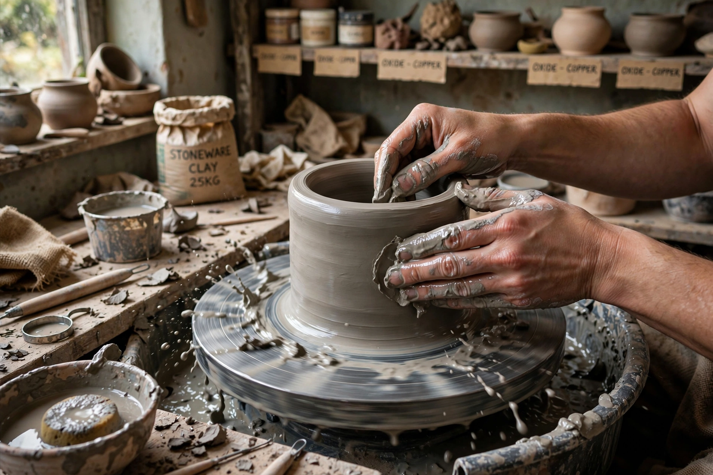

From Wikipedia, the free encyclopedia
| Clay | |
|---|---|
 Clay is plastic when wet and hardens on drying or firing | |
| Grain size | Particles finer than ~2–4 µm |
| Minerals | Kaolinite, illite, smectites (e.g. montmorillonite), chlorite |
| Uses | Pottery, bricks, tiles, cement, paper coating, drilling mud |
Clay is a fine-grained natural soil or sediment composed largely of clay minerals — hydrous aluminium phyllosilicates formed by the chemical weathering of feldspars and other silicate minerals. Wet clay is plastic: it can be moulded and holds its shape, and on drying or firing it becomes hard and permanent. These properties made clay one of humanity's earliest technologies — among the first ceramics, bricks, writing tablets and sculptures — and it remains an essential industrial raw material.
The clay minerals are sheet silicates with extremely small, platy crystals and large surface areas. Kaolinite (the mineral of china clay and porcelain) is a 1:1 layer silicate with low shrinkage; illite is the common clay of shales and soils; the smectite group (including montmorillonite, the main constituent of bentonite) swells strongly as water enters between its 2:1 layers. The plasticity, stickiness and cation-exchange capacity of clays arise from this structure and their surface charge. In soil science "clay" also denotes the finest particle-size fraction regardless of mineralogy, below silt and sand.
Clays form by hydrothermal alteration and by weathering of feldspar-rich rocks such as granite, then are transported and deposited in quiet water as muds, which compact into shale and mudstone. Famous deposits include the kaolin of Cornwall and Georgia (USA), the ball clays of Devon, and the bentonites of Wyoming.
Fired clay gives pottery, stoneware, porcelain, bricks, roof tiles and sanitary ware; unfired, it makes adobe and cob building. Clay is the key ingredient of the raw meal for Portland cement, a coating and filler for paper, a component of drilling fluids, cat litter and cosmetics, and — as terracotta — a classic sculptural medium, exemplified by the Terracotta Army of Qin Shi Huang. Expansive clay soils are a significant geotechnical hazard, swelling and shrinking with moisture and damaging foundations.